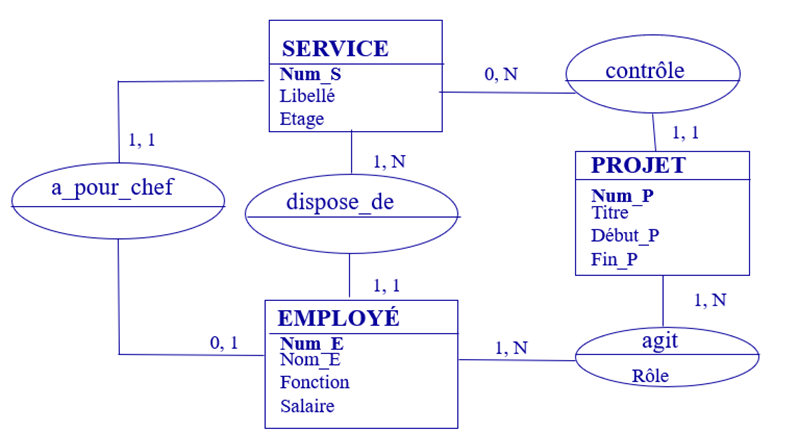
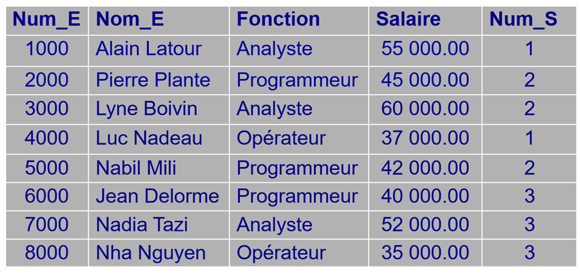
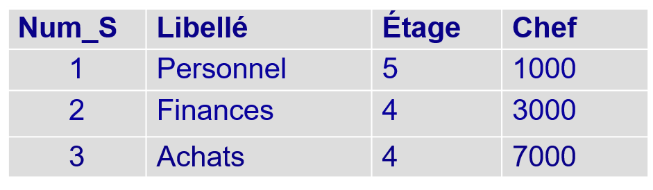
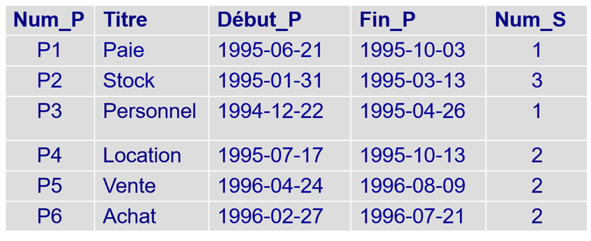
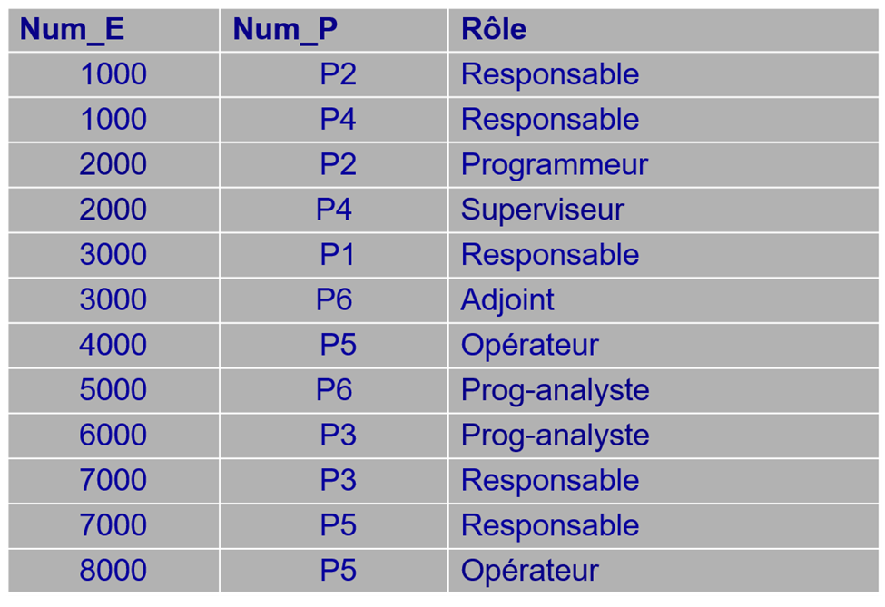

## Installing packages
#installed.packages("DBI")
#install.packages("RSQLite")
#install.packages("readxl")
## loading them
library(DBI)
library(RSQLite) # not installed by default on AVD
library(readxl)SQL and R
In this tuto, we’ll cover database queries using RSQLite connection.
The following functions of the DBI package used throughout the tutorial:
- dbConnect
- dbListTables
- dbWriteTable
- dbExecute
- dbReadTable
- dbGetQuery
1. Install required packages
2. Setting the working directory
# assuming the relative working folder is called R
path <- "C:/Users/nambchr/Desktop/tutorials/R"
setwd(path)3. Database Structure
The database structure will look like this:

There are four tables:
SERVICE (Num_S, Libellé, Étage, Chef)
EMPLOYÉ (Num_E, Nom_E, Fonction, Salaire, Num_S)
PROJET (Num_P, Titre, Début_P, Fin_P, Num_S)
AGIT (Num_E, Num_P, Rôle)
EMPLOYE table 
SERVICE

PROJET

AGIT

4. Database creation
getwd()[1] "C:/Users/nambchr/Desktop/tutorials/tutorials/tutorials"## Read data from a different sources;
employe <- readxl::read_excel(path = "base_donnees.xlsx", sheet = "Employe")Warning in strptime(x, format, tz = tz): unable to identify current timezone 'E':
please set environment variable 'TZ'service <- readxl::read_excel(path = "base_donnees.xlsx", sheet = "Service")
project <- readxl::read_excel(path = "base_donnees.xlsx", sheet = "Projet")
agit <- readxl::read_excel(path = "base_donnees.xlsx", sheet = "agit")
con <- dbConnect(RSQLite::SQLite(), ":memory:") # establish a connection
dbListTables(con) # Check the tables in the databasecharacter(0)dbWriteTable(con, "employe", employe, overwrite = TRUE)
dbWriteTable(con ,"service", service, overwrite = TRUE)
dbWriteTable(con ,"project", project, overwrite = TRUE)
dbWriteTable(con ,"agit", agit, overwrite = TRUE)
dbListTables(con)[1] "agit" "employe" "project" "service"## remove the four dataframes employe, service, project, and agit
rm(list= c("employe", "service", "project", "agit"))5. Questions
- Create a new EmployeeSpecial table containing employees with Num _E <8000
## Create a new table containing employee with num_e < 8000
dbExecute(con, "create table employeSpecial as select * from employe where num_e < 8000")[1] 0Update the EmployeeSpecial table by replacing the Num_E value with 7777 for employee ‘Nadia Tazi’.
## Update the table employeSpecial by replacing num_e by 7777 for the employee Nadia tazi dbExecute(con, "update employeSpecial set num_e = 7777 where nom_e = 'Nadia Tazi' ")[1] 1dbReadTable(con, "employeSpecial")num_e nom_e fonction salaire num_s 1 1000 Alain Latour Analyste 55000 1 2 2000 Pierre Plante Programmeur 45000 2 3 3000 Lyne Boivin Analyste 60000 2 4 4000 Luc Nadeau Opérateur 37000 1 5 5000 Nabib mili programmeur 42000 2 6 6000 Jean Delorme Programmeur 40000 3 7 7777 Nadia Tazi Analyste 52000 3Insert the following tuple in EmployeeSpecial: 8888, ‘Lien Nguyen’, ‘Analyste’, 57000, 3
dbExecute(con, "insert into employeSpecial values(8888, 'Lien Nguyen', 'Analyste', 57000, 3)")[1] 1Formulate a SQL query that allows you to obtain the list of employees with a salary between $30,000 and $40,000
dbGetQuery(con, "select * from employeSpecial where salaire between 30000 and 40000")num_e nom_e fonction salaire num_s 1 4000 Luc Nadeau Opérateur 37000 1 2 6000 Jean Delorme Programmeur 40000 3Formulate a SQL query that allows you to obtain the names of employees starting with the letter N
dbGetQuery(con, "select nom_e from employeSpecial where nom_e like 'N%' ")nom_e 1 Nabib mili 2 Nadia TaziFormulate a SQL query that allows you to obtain the list of projects managed by department number “1”
dbGetQuery(con, "select * from project where num_s =1")num_p titre debut_p fin_p num_s 1 P1 Paie 803692800 812678400 1 2 P3 Personnel 788054400 798854400 1Formulate a SQL query that allows you to obtain the list of employees who are analysts or programmers
dbGetQuery(con, "select * from employeSpecial where fonction in('Analyste', 'programmeur')")num_e nom_e fonction salaire num_s 1 1000 Alain Latour Analyste 55000 1 2 3000 Lyne Boivin Analyste 60000 2 3 5000 Nabib mili programmeur 42000 2 4 7777 Nadia Tazi Analyste 52000 3 5 8888 Lien Nguyen Analyste 57000 3Formulate a SQL query that obtains the names, positions and salaries of employees who are either programmers or employees with a salary < $45,000 and belonging to department 1
dbGetQuery(con, "select * from employeSpecial where ( fonction in ('programmeur') or salaire < 45000) and num_s = 1")num_e nom_e fonction salaire num_s 1 4000 Luc Nadeau Opérateur 37000 1Formulate a SQL query that allows you to get the titles of 3 projects with the latest end dates
dbGetQuery(con, "select titre, fin_p from project order by fin_p desc limit 3")titre fin_p 1 Vente 839548800 2 Achat 837907200 3 Location 813542400Show the minimum wage per job
dbGetQuery(con, "select fonction, min(salaire) as min_salaire from employeSpecial group by fonction")fonction min_salaire 1 Analyste 52000 2 Opérateur 37000 3 Programmeur 40000 4 programmeur 42000Formulate a SQL query that allows you to obtain the list of employees with a salary higher than the average salary of all employees
dbGetQuery(con, "select num_e, nom_e, salaire from employeSpecial where salaire > (select avg(salaire) from employeSpecial)")num_e nom_e salaire 1 1000 Alain Latour 55000 2 3000 Lyne Boivin 60000 3 7777 Nadia Tazi 52000 4 8888 Lien Nguyen 57000Formulate a SQL query that allows you to obtain the list of departments that are located on the same floor as the purchasing department
dbGetQuery(con, "select num_s , libelle from service where etage = (select etage from service where libelle in('Achats'))and libelle not in('Achats') ")num_s libelle 1 2 FinancesFormulate a SQL query that allows you to know how many projects each employee is involved in.
dbGetQuery(con, "select distinct num_e, count(*) as nb_projet from agit group by num_e ")num_e nb_projet 1 1000 2 2 2000 2 3 3000 2 4 4000 1 5 5000 1 6 6000 1 7 7000 2 8 8000 1Formulate a SQL query that allows you to determine the role assumed by Lyne Boivin in each of the projects in which she is involved? Display project title and role.
dbGetQuery(con, "select (select nom_e from employeSpecial where nom_e in ('Lyne Boivin') ) as nom_e, num_p, role from agit where num_e = (select num_e from employeSpecial where nom_e in ('Lyne Boivin'))")nom_e num_p role 1 Lyne Boivin P1 Responsable 2 Lyne Boivin P6 AdjointFormulate a SQL query that allows you to find out how many days ago each project was completed?
Formulate a SQL query to determine the number of months between the start date of each project and January 1, 2000?
Perform the following outer join operations on the EmployeeSpecial and AGIT tables:
LEFT OUTER JOIN
RIGHT OUTER JOIN
FULL OUTER JOIN.
dbGetQuery(con, " select a.*, num_p, role from EmployeSpecial as a left outer join agit as b on a.num_e = b.num_e ")num_e nom_e fonction salaire num_s num_p role 1 1000 Alain Latour Analyste 55000 1 P2 Responsable 2 1000 Alain Latour Analyste 55000 1 P4 Responsable 3 2000 Pierre Plante Programmeur 45000 2 P2 Programmeur 4 2000 Pierre Plante Programmeur 45000 2 P4 Superviseur 5 3000 Lyne Boivin Analyste 60000 2 P1 Responsable 6 3000 Lyne Boivin Analyste 60000 2 P6 Adjoint 7 4000 Luc Nadeau Opérateur 37000 1 P5 Opérateur 8 5000 Nabib mili programmeur 42000 2 P6 Prog-analyste 9 6000 Jean Delorme Programmeur 40000 3 P3 Prog-analyste 10 7777 Nadia Tazi Analyste 52000 3 <NA> <NA> 11 8888 Lien Nguyen Analyste 57000 3 <NA> <NA>dbGetQuery(con, "select a.*, num_p , role from EmployeSpecial as a right outer join agit as b on a.num_e = b.num_e")num_e nom_e fonction salaire num_s num_p role 1 1000 Alain Latour Analyste 55000 1 P2 Responsable 2 1000 Alain Latour Analyste 55000 1 P4 Responsable 3 2000 Pierre Plante Programmeur 45000 2 P2 Programmeur 4 2000 Pierre Plante Programmeur 45000 2 P4 Superviseur 5 3000 Lyne Boivin Analyste 60000 2 P1 Responsable 6 3000 Lyne Boivin Analyste 60000 2 P6 Adjoint 7 4000 Luc Nadeau Opérateur 37000 1 P5 Opérateur 8 5000 Nabib mili programmeur 42000 2 P6 Prog-analyste 9 6000 Jean Delorme Programmeur 40000 3 P3 Prog-analyste 10 NA <NA> <NA> NA NA P3 Responsable 11 NA <NA> <NA> NA NA P5 Responsable 12 NA <NA> <NA> NA NA P5 OpérateurdbGetQuery(con, "select a.*, num_p, role from EmployeSpecial as a full outer join agit as b on a.num_e = b.num_e")num_e nom_e fonction salaire num_s num_p role 1 1000 Alain Latour Analyste 55000 1 P2 Responsable 2 1000 Alain Latour Analyste 55000 1 P4 Responsable 3 2000 Pierre Plante Programmeur 45000 2 P2 Programmeur 4 2000 Pierre Plante Programmeur 45000 2 P4 Superviseur 5 3000 Lyne Boivin Analyste 60000 2 P1 Responsable 6 3000 Lyne Boivin Analyste 60000 2 P6 Adjoint 7 4000 Luc Nadeau Opérateur 37000 1 P5 Opérateur 8 5000 Nabib mili programmeur 42000 2 P6 Prog-analyste 9 6000 Jean Delorme Programmeur 40000 3 P3 Prog-analyste 10 7777 Nadia Tazi Analyste 52000 3 <NA> <NA> 11 8888 Lien Nguyen Analyste 57000 3 <NA> <NA> 12 NA <NA> <NA> NA NA P3 Responsable 13 NA <NA> <NA> NA NA P5 Responsable 14 NA <NA> <NA> NA NA P5 OpérateurWrite the statement to close the connection
dbDisconnect(con)